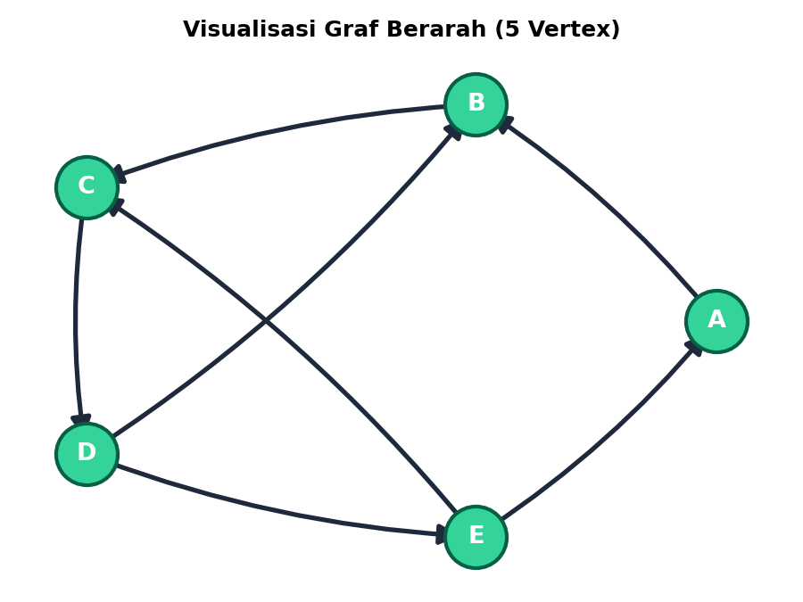
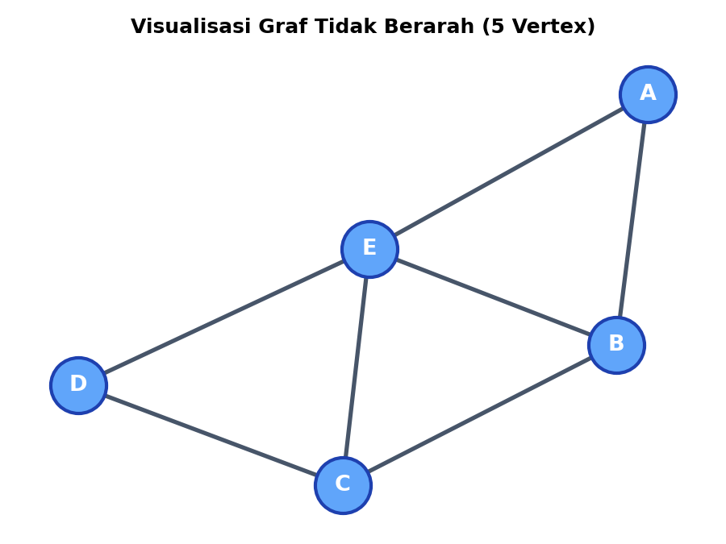

Notebook Jupyter NetworkX
1. Graf Berarah (Directed Graph) — 5 Vertex
Pada graf berarah (directed graph / digraf), setiap sisi memiliki arah tertentu dari simpul asal (source) menuju simpul tujuan (target), sehingga relasi (u, v) tidak sama dengan (v, u). Topologi dibentuk dengan jumlah simpul N = 5 (A, B, C, D, E) dan jumlah sisi berarah E = 7.

1. Degree (In-Degree, Out-Degree, & Total Degree)
Derajat masuk (In-Degree) adalah jumlah sisi berarah yang masuk ke simpul, derajat keluar (Out-Degree) adalah jumlah sisi berarah yang keluar dari simpul, dan derajat total adalah penjumlahan keduanya:
Total Out-Degree : Σ k_out = 1 + 1 + 1 + 2 + 2 = 7 = E
Total Degree : Σ k_tot = 2 + 3 + 3 + 3 + 3 = 14 = 2E
2. Distribusi Derajat P(k)
Peluang sebuah simpul yang dipilih secara acak memiliki derajat k tertentu (P(k) = N_k / N):
3. Average Degree (Rata-rata Derajat)
Nilai rata-rata derajat untuk seluruh simpul dalam jaringan berarah:
Rata-rata Out-Degree : ⟨k_out⟩ = E / N = 7 / 5 = 1.4000
Rata-rata Total : ⟨k_tot⟩ = 2E / N = 14 / 5 = 2.8000
4. Density (Kepadatan Graf Berarah)
Rasio antara jumlah sisi aktual (E) dengan jumlah kemungkinan sisi maksimum pada graf berarah tanpa perulangan mandiri:
Density = E / [N × (N − 1)] = 7 / 20 = 0.3500 (35.00%)
5. Koefisien Klasterisasi Berarah (Clustering Coefficient)
Dihitung menggunakan algoritma Fagiolo untuk graf berarah (memperhitungkan segitiga bertaut berarah):
6. Jalur Terpendek Berarah (Shortest Path)
Lintasan terpendek antar-simpul yang secara ketat mematuhi arah anak panah:
7. Diameter Jaringan & Jarak Rata-rata
Topologi graf ini terhubung kuat (strongly connected) karena setiap simpul memiliki rute berarah ke setiap simpul lainnya:
Jarak Rata-rata (⟨d⟩) : Rata-rata jarak terpendek untuk 20 pasangan berarah = 37 / 20 = 1.8500
8. Matriks Adjacency (Ketetanggaan Berarah)
Matriks biner di mana baris menunjukkan simpul asal (source) dan kolom menunjukkan simpul tujuan (target). Nilai bernilai 1 jika ada sisi berarah dan 0 jika tidak ada:
| Asal \ Tujuan | A | B | C | D | E |
|---|---|---|---|---|---|
| A | 0 | 1 | 0 | 0 | 0 |
| B | 0 | 0 | 1 | 0 | 0 |
| C | 0 | 0 | 0 | 1 | 0 |
| D | 0 | 1 | 0 | 0 | 1 |
| E | 1 | 0 | 1 | 0 | 0 |
2. Graf Tidak Berarah (Undirected Graph) — 5 Vertex
Pada graf tidak berarah (undirected graph), sisi menghubungkan dua simpul secara simetris dua arah (u, v) = (v, u). Topologi memiliki N = 5 simpul (A, B, C, D, E) dan E = 7 sisi dengan simpul E bertindak sebagai central hub penghubung.

1. Degree (Derajat Simpul)
Derajat simpul k adalah jumlah sisi yang terhubung langsung ke simpul tersebut:
2. Distribusi Derajat P(k)
Peluang sebuah simpul yang dipilih secara acak memiliki derajat k tertentu (P(k) = N_k / N):
3. Average Degree (Rata-rata Derajat)
Nilai rata-rata derajat seluruh simpul dalam jaringan tidak berarah:
4. Density (Kepadatan Graf)
Rasio antara jumlah sisi aktual (E) dengan kemungkinan sisi maksimum pada graf tidak berarah:
Density = 2E / [N × (N − 1)] = 14 / 20 = 0.7000 (70.00%)
5. Koefisien Klasterisasi (Clustering Coefficient)
Mengukur seberapa erat tetangga-tetangga suatu simpul saling terhubung satu sama lain dengan rumus C_i = 2 × e_i / [k_i × (k_i − 1)]:
6. Jalur Terpendek (Shortest Path)
Jarak lintasan paling minimal antar seluruh 10 pasangan simpul tidak berarah:
7. Diameter Jaringan & Jarak Rata-rata
Karakteristik jarak global pada graf tidak berarah:
Jarak Rata-rata (⟨d⟩) : Rata-rata jarak terpendek untuk 10 pasangan simpul = 13 / 10 = 1.3000
8. Matriks Adjacency (Ketetanggaan)
Matriks biner simetris A di mana A[i][j] = 1 jika terdapat sisi antara simpul i dan j, dan 0 jika tidak ada sisi:
| Simpul | A | B | C | D | E |
|---|---|---|---|---|---|
| A | 0 | 1 | 0 | 0 | 1 |
| B | 1 | 0 | 1 | 0 | 1 |
| C | 0 | 1 | 0 | 1 | 1 |
| D | 0 | 0 | 1 | 0 | 1 |
| E | 1 | 1 | 1 | 1 | 0 |